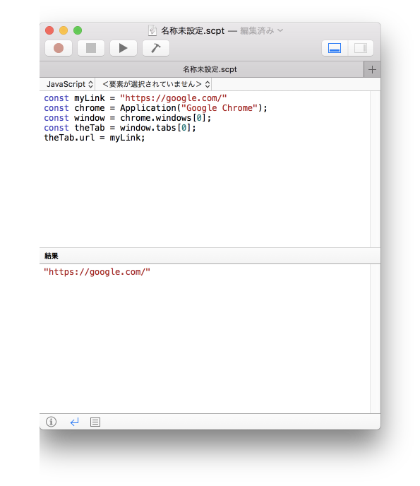
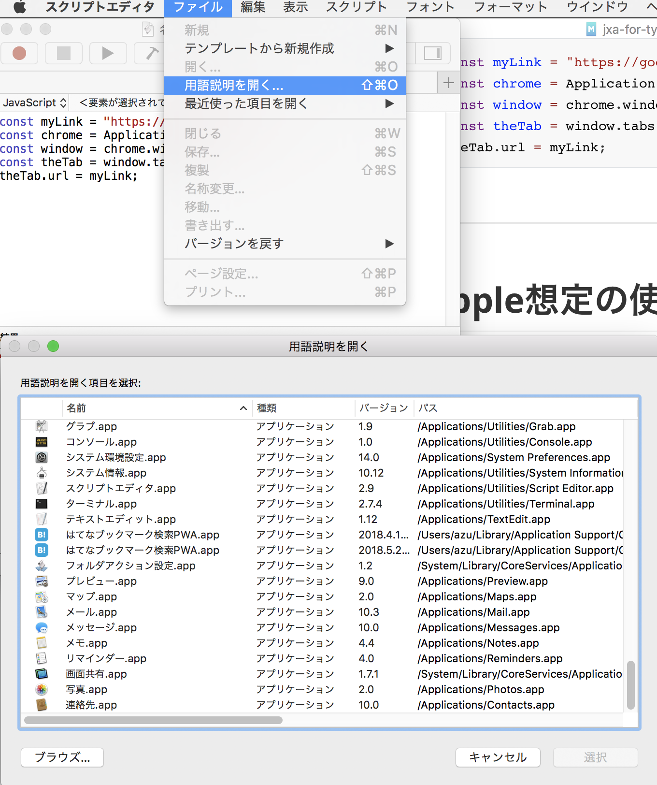
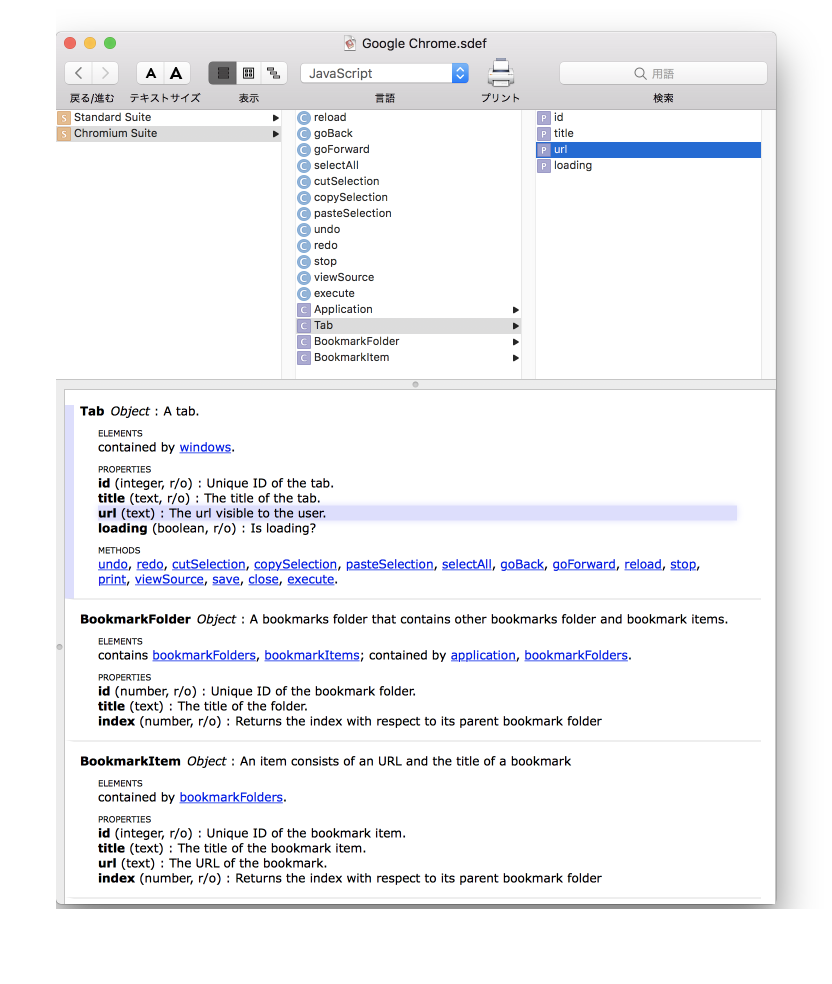
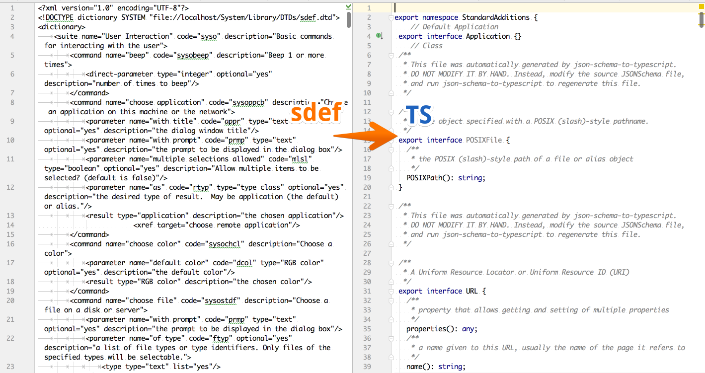

autoscale: true
JXA for TypeScript/Node.js
自己紹介

- Name : azu
- Twitter : @azu_re
- Website: Web scratch, JSer.info
JXA(JavaScript for Automation)
- AppleScriptのJavaScript版(WebKit)
- macOSにはビルトインされているので何もしなくても使える
osascriptという実行エンジンがある
- Home · JXA-Cookbook/JXA-Cookbook Wiki
- jxa@apple-dev.groups.io | Wiki
JXAの問題
- クラッシュする
- リファレンスがまともにない
- 実行環境がまともではない – 落ちまくる
- エディタ環境もまともになり
- デバッグが難しい
- macOSのみ対応
JXAのいいところ
- (JXA)スクリプトファイルでmacOSの自動化ができる
- Objective-Cと同等の表現ができる
- mac向けにネイティブアプリはなんか操作できる
- mac向けのアプリでは一部便利な関数が用意されている
JXAのできること
- Automatorでできること全部
- アプリへのキー入力、開く閉じるなどの操作
- ラベルを見つけて操作など無理やりなんとかできる
- 対応アプリはアプリから情報を取得できる
- omnifocusはTodoデータをデータベースから引っ張れるとか
- ダイアログとかでインタラクティブなものを簡単につくれる
- しょぼいGUIアプリみたいのが作りやすい
JXAの用途
- アプリ作るほどじゃないけど自動化したいときに使う
- シェルスクリプトのアプリ向け処理みたいな感じで使う
- macOSネイティブなので、Alfredなど対応アプリも多い
osascriptコマンドで実行できるのでシェル叩けるならどこからでも- メニューバーからも実行できるようにもなってる
- AppleScriptをメニューバーから実行するための設定
スクリプト言語としてのJXA
JavaScriptエンジンはmacOsに依存(WebKit/JavaScriptCore)
癖のあるJavaScriptフレームワーク上のJavaScriptという印象
- プロパティがgetterじゃなくて
name()のような関数呼び出し
- プロパティがgetterじゃなくて
AppleScriptより扱いやすい
- 非英語圏の人間にとってはAppleScriptの構文が難しすぎる
- Objective-Cよりはるかに英語的な構文
AppleScriptでChromeでGoogleを開く
set myLink to "https://google.com/"
tell application "Google Chrome"
tell its window 1
set theTabs to count of tabs
set URL of tab 1 to myLink
end tell
end tell
AppleScriptは英語
次の3行はAppleScriptでは同じ意味(itはtellで指定したオブジェクトなどを表す)
handlerX() of it
it's handlerX()
its handlerX()
次の2行はAppleScriptでは同じ意味(count関数に直接引数"abc"を渡して呼ぶ。前後どちらも対応)
count "abc"
"abc" count
JXAでChromeでGoogleを開く
const myLink = "https://google.com/"
const chrome = Application("Google Chrome");
const window = chrome.windows[0];
const theTab = window.tabs[0];
theTab.url = myLink;
Apple想定の使い方

- スクリプトエディタ
- エディタ かつ 実行環境
Apple想定の使い方 - リファレンス
スクリプトエディタから"用語説明"でインストールしてるアプリのリファレンスが見られる
- 鳶嶋工房 / AppleScript / 入門 / 用語説明の読み方(オブジェクト編)
- 鳶嶋工房 / AppleScript / 入門 / 用語説明の読み方(値編)


JXAのデバッグ
- Safariを開く
- JXAで
debugger;をいれて実行する - Safariでデバッグできる
- コンソールが使えるのでREPLライク
debugger;
JXAの問題
- リファレンスが読めない
- リファレンスに載ってないものが多すぎる
- まともなエディタ環境がない
- コードの補完が効く環境がないに等しい
- デバッグが難しすぎる
- 落ちる、クラッシュ、リファレンスない
- Node.jsでできるところはNode.jsでやりたい
pathとか文字列処理とか、JXAはライブラリの仕組みはあるけどnpmは使えない
リファレンス
- リファレンス自体の読み方が難しい
Tabというクラスは定義されているが、Tabを得る方法が載ってない…- すべてのプロパティやコマンドなどが載っているわけじゃない(自動生成されているレベル)
- リファレンスは
.sdefという複雑なXMLで書かれている- クラスの定義、enumの定義、定数、interfaceなどやたら高度な定義ができるXML
リファレンスから型定義を生成する
- TypeScriptの型定義ファイルがあれば今どきのエディタは補完が効く
- リファレンス(
.sdef)はある種の型定義XMLに見えた - パースしてXMLから
.d.tsを作ればいい - 作った: => @jxa/sdef-to-dts

JXAの型定義ファイルを使ってコード補完する
- macOSに入ってるアプリなどのリファレンスからTypeScriptの型定義を生成
- @jxa/global-typeは
globalにJXAのグローバルオブジェクトの定義を追加するモジュール - 読み込めば、ざっくりとした補完 + 型チェックが効くようになる
- リファレンス自体に載ってないものが多いため
anyで逃げている…
- リファレンス自体に載ってないものが多いため
import "@jxa/global-type";
// your JXA application
var userName = Application("System Events").currentUser().name();

^ VSCodeやWebStormなどではある程度まともになる
JXAのデバッグ
console.logするとスクリプトエディタが落ちる- SafariにつないでもSafariごと落ちる
- CLIのREPLから叩くと落ちても安全
- 公式のREPLが
osascriptにビルトインされている
REPLを起動する
$ osascript -il JavaScript
JXAの自作REPL
osascriptにREPLがあるのをしらなくてNode.jsで動くREPLを書いたconst repl = require('repl');- 作ったREPL: @jxa/repl
$ npx @jxa/repl
> Application("System Events").currentUser().name();
'azu'
JXAのデバッグ
- JXAはとにかくデバッグしにくい
- JXAで書かなければ解決する
- JXAがいらない部分はNode.jsで書こう
- => Node.jsの中でJXAを実行すればいい
JXA in Node.js
-
- Node.jsからJXAを実行して結果を取得するモジュール
先駆者
@jxa/run
import "@jxa/global-type";
import { run } from "@jxa/run";
export const currentUserName = () => {
// このコールバック関数内はJXAとしてosascriptで実行される
return run(() => {
const sys = Application("System Events");
return sys.currentUser().name();
});
};
// メインとかは普通にNode.js
export const example = async () => {
const userName = await currentUserName();
return `User: ${userName}`;
};
JXA in Node.js
- JXAが最小限になる
- 最小限のJXAは書かないといけないのは同じだけど…
- メインがNode.jsになってデバッグしやすい
- npmを簡単に組み合わせることができてエコシステムが拡張できる
- JXAで書いたものをモジュール化できる(npmで配れる)
- つかえるのはmacOSだけなのは同じだけど
export type ModifierOption = {
shift?: boolean;
control?: boolean;
option?: boolean;
command?: boolean;
};
function createModifier(modifierOption: ModifierOption) {
const modifiers = [];
if (modifierOption.shift)
modifiers.push("shift down");
if (modifierOption.command)
modifiers.push("command down");
if (modifierOption.control)
modifiers.push("control down");
if (modifierOption.option)
modifiers.push("option down");
return modifiers;
}
// キーストロークを送信する関数 from JXA in Node.js
export function sendKeyStroke(key: string, modifierOption: ModifierOption) {
const modifiers = createModifier(modifierOption);
return run((key, modifiers) => {
const SystemEvents = Application("System Events");
SystemEvents.keystroke(key, { using: modifiers });
}, key, modifiers);
}
ユースケース
- Firefoxで開発者ツールを開いた状態でのスクリーンショットを撮って保存する
- Seleniumだと開発者ツールを開けない?
- screenshot-dev-tools.ts
まとめ
- JXA in Node.jsをやるためにいろいろ書いた
JXA-userland/JXAのmonorepoで公開
Integration JXA with TypeScript
- Run JXA from Node.js
- Support Auto complete for editor/IDE via TypeScript definition file(
.d.ts)- See @jxa/types and @jxa/global-type
似た概念
- NILScript
- WindowsでSpiderMonkeyを使ったもの
- とても良くできていて便利だった